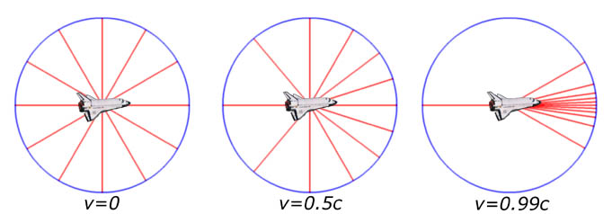
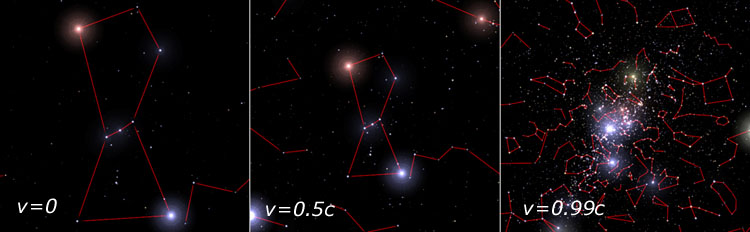
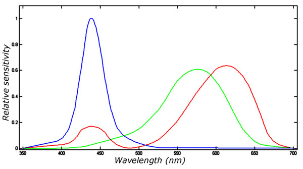
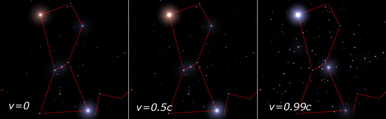
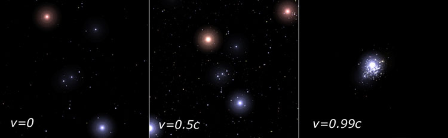

By Alexis Brandeker, 2002.
We are all familiar with the picture. Captain Picard (or whoever) orders warp speed, and we see the stars turn into lines sweeping by the ship. But how realistic is this picture? Here we will briefly overview what an astronaut approaching light speed would really see, according to the theory of special relativity. It is a similar question to that addressed in "Can You See the Lorentz-Fitzgerald Contraction?", so you may want to read that section first.
Let us consider two effects separately, the geometric effect on the direction from where photons come, called aberration, and the effect on the radiation, including Doppler and beaming effects.
Imagine the astronaut Celesta being in her spaceship at rest with respect to the distant stars. Photons from these stars come in isotropically from all directions. Accelerating to relativistic speeds, she sees how the whole field of view seems to shrink in the direction of travel. Even photons from stars that Celesta knows are behind, come in from the forward direction. This is the effect of aberration.
|
 |
| Figure 1. The figure shows arriving photons from 12 fixed distant stars placed evenly around the circle. To the left the spaceship is at rest with respect to the stars, and the photons arrive as expected. In the centre figure the spaceship travels at half the velocity of light, and the directions of arriving photons are clearly skewed to come from the forward direction. To the right the ship travels at 0.99c, and almost all photons arrive from the front, even photons that originate from stars that actually are located behind. |
Although not entirely correct, a useful picture to understand aberration intuitively is to think of the photons as hard balls travelling with a finite velocity. When the spaceship moves, in its own inertial frame the photons get a velocity component added in the opposite direction to the spaceship movement. Therefore the photons seem to come from a direction closer to the forward direction.
|
 |
| Figure 2. This figure shows aberration effects for the ship travelling towards the constellation of Orion, assuming a 30 degrees field of view. The field of view is kept constant, only the speed is changed from 0 to 0.99c, showing dramatic effects on the perceived field. No radiative effects are considered, only geometrical aberration. |
Now let us focus on the light itself, coming from the stars. Starlight consists of light in a wide range of wavelengths, so while it is true that an approaching star will have its light Doppler shifted into shorter wavelengths (except for very high and inclined velocities), it is not necessarily true in general that the star will show a bluer colour. The reason is that the whole spectral energy distribution is shifted, so that a previously invisible infrared part may contribute considerably to a redder colour, and similarly, light from the blue part of the spectrum may be shifted out to the invisible UV.
Considerations of the flux lead to what is generally called beaming. Beaming is related to aberration in that flux intensity is increased in the forward direction due to the squeezing of the total flux. In addition, if we consider a steady stream of photons, they tend to arrive more often if one travels towards the source, and less often if one recedes. This results in higher flux intensity, and causes stars in front to get brighter, and from rear to get fainter.
|
 |
|
|
The human eye is really only sensitive to a limited range of wavelengths. Evaluating what Celesta would see in her spacecraft, we therefore also need to consider her eye physiology. Figure 3 shows approximate curves for the relative sensitivities of the three different cones of a human eye as a function of wavelength. To calculate the appearance of a star, we need to integrate its spectral energy distribution multiplied with each sensitivity curve to get the RGB (red-green-blue) signal.
|
 |
| Figure 4. In this figure we see how Doppler shift and beaming effect the appearances of stars, without taking aberration into account. This is the same field as in figure 2, the constellation of Orion, and we are imagining the ship speeding to the centre of Orion. The bright red star is the upper left corner is the red supergiant Betelgeuse, and the bright blue star in the lower left is the blue supergiant Rigel. In the left panel the two stars are of about the same brightness, but as we increase the speed, Betelgeuse starts to outshine Rigel. This is due to the Doppler shift; the red Betelgeuse gets its large infrared spectral energy distribution shifted into the visible region, while the blue Rigel gets its spectral energy distribution shifted out to UV and x-ray wavelengths until it fades away. Many previously invisible or faint stars in the background get boosted enough by the beaming effect that they become visible. Note particularly the somewhat faint star to the lower right of Orion’s belt, the red giant star 31 Orionis. In the first panel it is definitely fainter than the stars in the Orion belt, while in the last it is the second brightest star in the field, because of its intrinsic very red colour. |
By combining the geometric and radiative relativistic effects we get a picture of what the surrounding space would look like to Celesta. Orion is shown again in figure 5, now without the constellation lines and with both relativistic effects taken into account. The combined effect makes the beaming of the field become very apparent at high velocities; at 0.99c almost all visible radiation from the universe is confined to a region 10 degrees in radius around the direction of travel.
|
 |
| Figure 5. Both relativistic effects switched on. |
Even at these speeds Celesta hardly notices any motion at all. At 0.99c she experiences time about 7 times slower than the surrounding universe, and thus speeds on at about 7 light years in a year ship-time (note that she only measures a covered distance of about 1 light year from her own inertial frame, but space from there is Lorentz-Fitzgerald contracted 7 times). To get to the nearest extrasolar star alpha Centauri would take her about 7 months ship-time. To see stars fly by like in certain sci-fi series, she would have to travel much faster, on the order of light years per experienced ship second. This corresponds to the actual velocity of 0.9999999999999994c, or (1 − 6×10−16)c. At this extremely high ultra-relativistic velocity, radiation from the universe would emanate from a single point in the direction of travel, and all radiation, even the cosmic background, would be Doppler shifted out to gamma ray wavelengths or far radio, with next to nothing in between. Not exactly as seen on TV (surprise!).